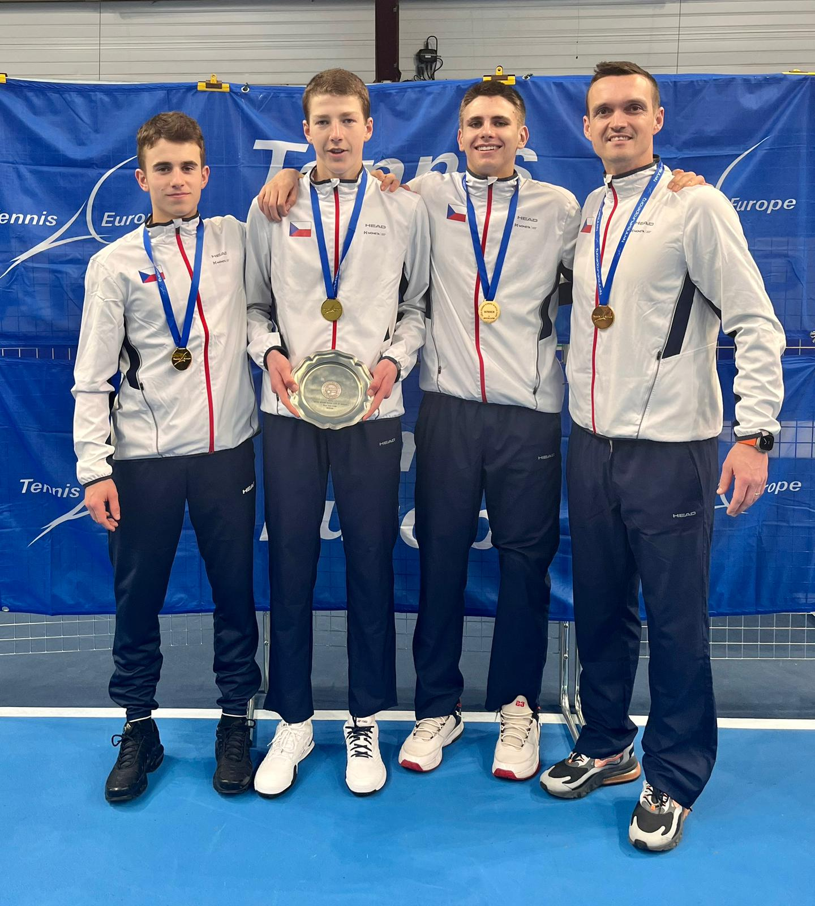
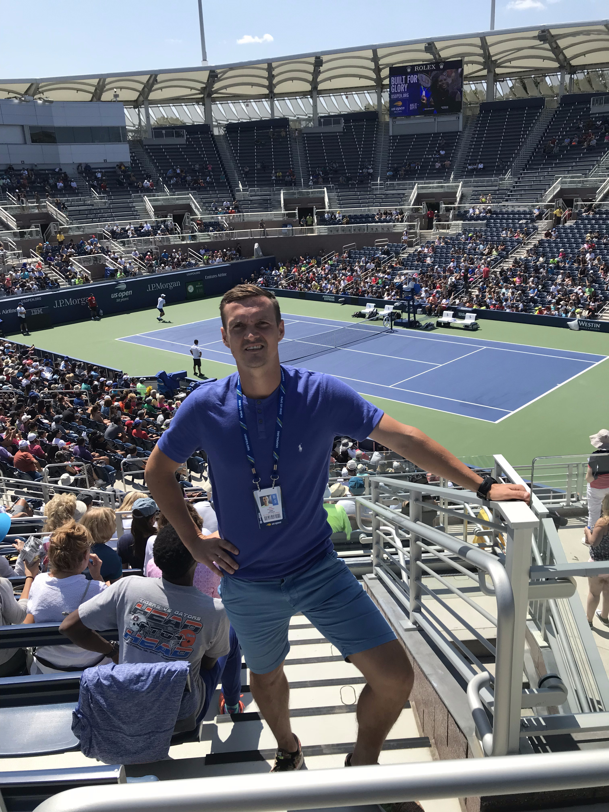
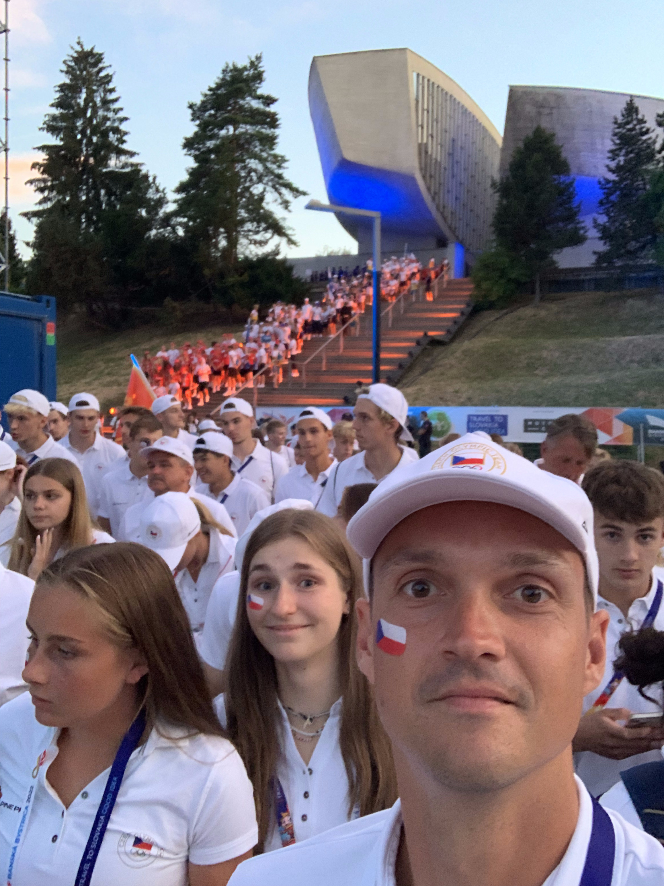
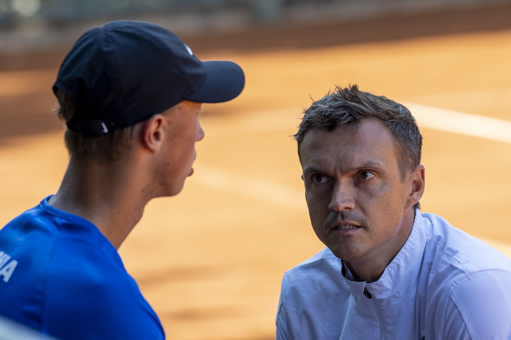

I build data tools and federation software for tennis — professional-grade tools built for real coaching budgets, by someone who actually coaches.
Nabízím řešení na míru — pro kluby i svazy. Vycházím z vlastní zkušenosti trenéra, který organizoval mezinárodní turnaje včetně Summer a Winter Cupu, působil na nich jako trenér i jako pořadatel, cestoval se svazovými hráči po světě a pracoval s profesionálními tenisty. Dnes do toho přidávám AI.




I'm a tennis coach and AI implementor based in the Czech Republic. After years on the court, I started building the tools I always wished existed — affordable, intelligent, and built by someone who actually understands the game.
My focus is making professional-grade analytics accessible to everyday clubs and federations — with practical pricing and implementation for real coaching environments. I work across the full stack: from scraping live tournament data to building mobile tracking apps.
I also hold training in mental coaching and work with the GROW model — which means my approach to both tennis and software is always goal-oriented and structured.
Tools built for every level of tennis — from player stats to federation infrastructure.
Trip and expedition management platform built for national tennis federation workflows. Manages player travel logistics, accommodation, budgets, and documentation for federation-organized tournaments and training camps. Built with Czech Tennis Association (ČTS) and ready for international federations.
MVP Ready View Presentation →Tournament and match scheduling platform built for Czech Tennis Federation workflows. Manages player pools, court assignments, and generates optimized match schedules automatically. It can also be used by clubs organizing shared tournament trips for their players.
Live Demo → View Presentation →Player performance analytics platform for federations using Wingfield court sensors. Coaches upload XLSX exports from Wingfield devices — the system parses serve speed, rally stats, and return percentages, benchmarks them against age-category references (U12–Open), and generates prioritized coaching recommendations automatically.
🔒 In Development View Presentation →Automated data pipeline scraping ITF, Czech Tennis Association (ČTS), and Tennis Europe websites. Populates tournament schedules, player rankings, and match results into structured formats. Includes a Coach App for federation talent centres (TSM, KTA) with player tracking, activity logs, and multi-role access.
Live ✅ View Presentation →Mobile application for live serve tracking during matches. Records placement, speed zones, and success rates in real time — giving coaches instant data without manual notation.
🔒 In DevelopmentComprehensive AI-powered analytics platform for grassroots tennis clubs. Provides enterprise-level match analysis, player development tracking, and performance reporting in a practical setup for everyday club operations.
🔒 Private BetaLooking for partnerships, consulting, or collaboration on tennis tech projects? I'd love to hear from you.